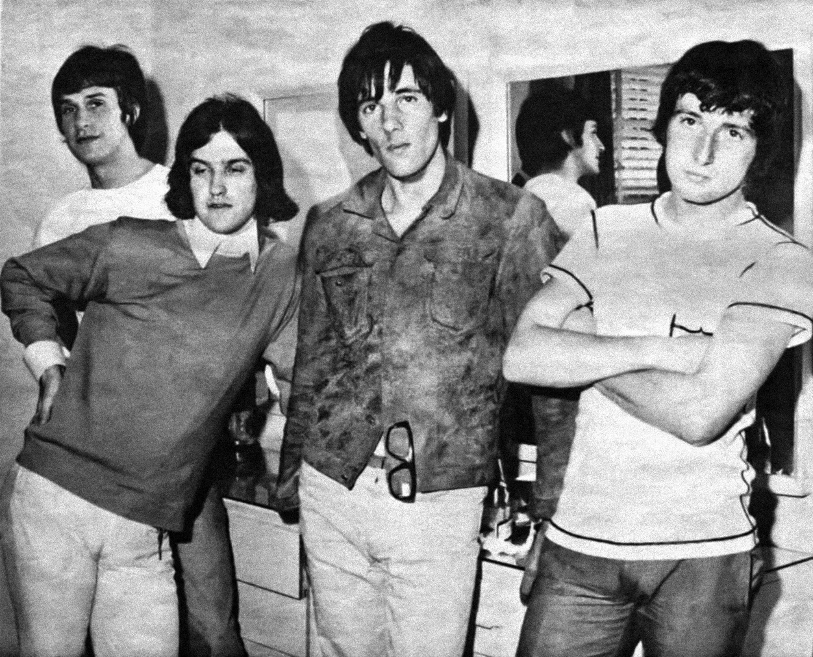

The Kinks invented a piece of rock guitar history with a razor blade and a ruined amplifier.
A year later, an onstage fight got them banned from America entirely.
That ban is the reason they sound like no other British Invasion band.

Table of Contents
- How the Band Formed in Muswell Hill
- The Slashed Amp That Invented a Sound
- The Fight That Got Them Banned From America
- Turning Inward: A Ban That Made Them More English
- FAQ
How The Kinks Formed in Muswell Hill
Ray Davies was born on June 21, 1944, into a working-class family in Muswell Hill, North London.
His older sister Rene gave him his first guitar, a Spanish model he'd wanted, on his 13th birthday.
That same night, Rene collapsed and died of a heart attack while dancing at a London ballroom.
She had a weak heart from childhood illness, and she was 31 years old.
Decades later, Davies turned that memory into the Kinks song "Come Dancing."
Two Brothers and a Shared Love of Skiffle
Ray and his younger brother Dave played guitar together throughout their teenage years.
They worked through rock and roll songs and the skiffle records both of them loved.
In 1963, while Ray was studying at art school, the brothers decided to start a band.
They recruited bassist Pete Quaife and drummer Mick Avory to complete the lineup.
The group briefly called itself the Ravens before settling on The Kinks.
The Slashed Amp That Invented a Sound
"You Really Got Me" was the band's third single, released in 1964.
It topped the UK charts and reached the US Top 10, becoming their breakthrough hit.
A Razor Blade, Out of Pure Frustration
Dave Davies wanted a guitar tone nobody else had.
Out of frustration, he took a razor blade to the speaker cone of his small Elpico amplifier.
He then ran that ruined amp through a larger Vox amp as a kind of pre-amp.
The result was a raw, distorted buzz that had never appeared on a hit record before.
That single riff is widely credited as a direct ancestor of hard rock, heavy metal, and punk.
The Fight That Got Them Banned From America
Tension inside the band boiled over during their 1965 UK tour, before they'd even reached America.
A drunken argument between Dave Davies and Mick Avory turned physical the night before a show in Cardiff.
A Hi-Hat Stand and Sixteen Stitches
Onstage the next night, Dave Davies needled Avory in front of the crowd.
Avory responded by striking him in the head with his hi-hat stand.
Davies was rushed to the hospital and needed sixteen stitches.
Police reportedly considered an attempted murder charge, though Davies dropped the matter entirely.
Between that incident and other disputes on their US dates, the American Federation of Musicians barred the band from touring the United States.
The ban held from 1965 until 1969.
Turning Inward: A Ban That Made Them More English
Every other major British Invasion band spent the mid-1960s chasing American audiences directly.
They couldn't, so Ray Davies stopped trying.
Waterloo Sunset Instead of the Billboard Chart
Davies turned his songwriting toward small, specific English life instead: London sunsets, suburban routines, class and nostalgia.
"Waterloo Sunset" and "Sunny Afternoon" both came out of this period, wry and unmistakably British in a way American-chasing pop rarely was.
The ban that should have ended the band's career instead pushed Ray Davies toward the observational songwriting he's remembered for today.
The band kept recording and touring in various forms all the way until 1996, and their influence runs straight through the Britpop bands of the 1990s.
FAQ
Who founded The Kinks?
Brothers Ray and Dave Davies formed The Kinks in Muswell Hill, North London, in 1963.
Bassist Pete Quaife and drummer Mick Avory completed the original lineup.
How did Dave Davies get that distorted sound?
He slit his amplifier's speaker cone with a razor blade.
He then ran it through a bigger amp as a pre-amp, creating one of rock's first fuzz tones.
Why were they banned from touring the US?
After onstage violence and other disputes during their 1965 US tour, the American Federation of Musicians barred them from the country.
The ban lasted until 1969.
What made their songwriting so distinctly English?
Cut off from America, Ray Davies turned to observational songs about English life instead.
"Waterloo Sunset" and "Sunny Afternoon" are the clearest examples.
The Kinks turned a career setback into one of the most distinctive songbooks of the decade.
Their story is a core thread in the wider British Invasion & Beat Music movement.
Back to the 1960smusic.net homepage to explore every genre of the decade, starting with The Kinks themselves.